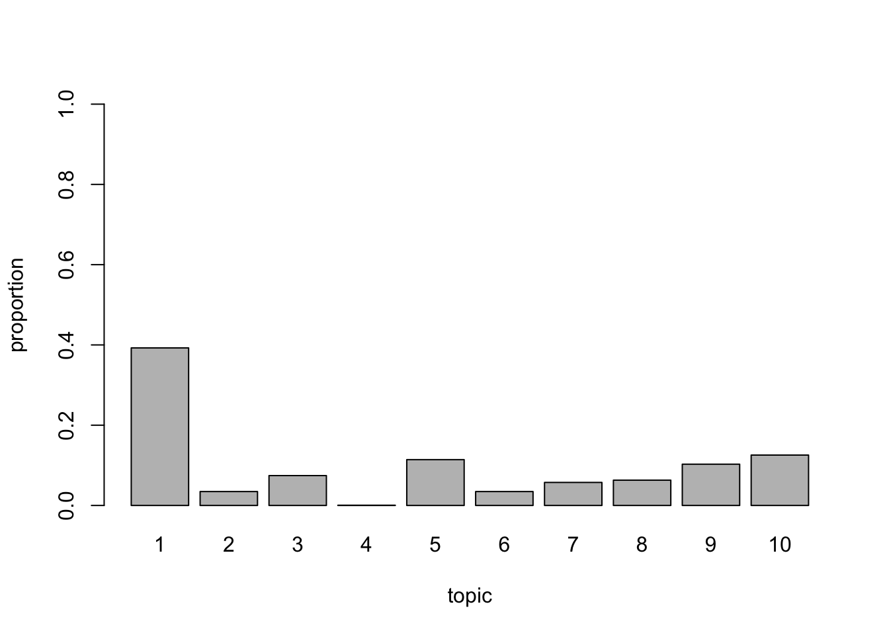

Topic modeling is technique to extract abstract topics from a collection of documents. In order to do that input Document-Term matrix usually decomposed into 2 low-rank matrices: document-topic matrix and topic-word matrix.
Latent Semantic Analysis is the oldest among topic modeling techniques. It decomposes Document-Term matrix into a product of 2 low rank matrices \(X \approx D \times T\). Goal of LSA is to receive approximation with a respect to minimize Frobenious norm: \(error = \left\lVert X - D \times T \right\rVert _F\). Turns out this can be done with truncated SVD decomposition.
text2vec borrows SVD from rsparse package and adds convenient interface with an ability to fit model and apply it to new data.
As usual we will use built-in text2vec::moview_review dataset. Let’s clean it a bit and create DTM:
library(stringr)
library(text2vec)
data("movie_review")
# select 1000 rows for faster running times
movie_review_train = movie_review[1:700, ]
movie_review_test = movie_review[701:1000, ]
prep_fun = function(x) {
# make text lower case
x = str_to_lower(x)
# remove non-alphanumeric symbols
x = str_replace_all(x, "[^[:alpha:]]", " ")
# collapse multiple spaces
x = str_replace_all(x, "\\s+", " ")
}
movie_review_train$review = prep_fun(movie_review_train$review)
it = itoken(movie_review_train$review, progressbar = FALSE)
v = create_vocabulary(it)
v = prune_vocabulary(v, doc_proportion_max = 0.1, term_count_min = 5)
vectorizer = vocab_vectorizer(v)
dtm = create_dtm(it, vectorizer)Now we will perform tf-idf scaling and fit LSA model:
tfidf = TfIdf$new()
lsa = LSA$new(n_topics = 10)
# pipe friendly transformation
doc_embeddings = fit_transform(dtm, tfidf)
doc_embeddings = fit_transform(doc_embeddings, lsa)## INFO [2018-12-21 20:44:49] soft_als: iter 001, frobenious norm change 1.986
## INFO [2018-12-21 20:44:49] soft_als: iter 002, frobenious norm change 1.658
## INFO [2018-12-21 20:44:49] soft_als: iter 003, frobenious norm change 0.115
## INFO [2018-12-21 20:44:49] soft_als: iter 004, frobenious norm change 0.042
## INFO [2018-12-21 20:44:49] soft_als: iter 005, frobenious norm change 0.022
## INFO [2018-12-21 20:44:49] soft_als: iter 006, frobenious norm change 0.013
## INFO [2018-12-21 20:44:49] soft_als: iter 007, frobenious norm change 0.008
## INFO [2018-12-21 20:44:49] soft_als: iter 008, frobenious norm change 0.005
## INFO [2018-12-21 20:44:49] soft_als: iter 009, frobenious norm change 0.004
## INFO [2018-12-21 20:44:49] soft_als: iter 010, frobenious norm change 0.003
## INFO [2018-12-21 20:44:49] soft_als: iter 011, frobenious norm change 0.002
## INFO [2018-12-21 20:44:49] soft_als: iter 012, frobenious norm change 0.001
## INFO [2018-12-21 20:44:49] soft_als: iter 013, frobenious norm change 0.001
## INFO [2018-12-21 20:44:49] soft_als: iter 014, frobenious norm change 0.001
## INFO [2018-12-21 20:44:49] soft_impute: converged with tol 0.001000 after 14 iter
## INFO [2018-12-21 20:44:49] running final svd
## INFO [2018-12-21 20:44:49] final rank = 10doc_embeddings contains matrix with document embeddings (document-topic matrix) and lsa$components contains topic-word matrix:
dim(doc_embeddings)## [1] 700 10dim(lsa$components)## [1] 10 3029Usually we need not only analyze a fixed dataset, but also apply model to new data. For instance we may need to embed unseen documents into the same latent space in order to use their representation in some downstream task (for example classification). text2vec keep in mind such task from the very first days of development. We can elegantly perform exactly the same transformation on the new data with transform() method (and possibly with %>% pipe):
new_data = movie_review_test
it = itoken(new_data$review, preprocessor = prep_fun, progressbar = FALSE)
new_doc_embeddings = create_dtm(it, vectorizer)
# apply exaxtly same scaling wcich was used in train data
new_doc_embeddings = transform(new_doc_embeddings, tfidf)
# embed into same space as was in train data
new_doc_embeddings = transform(new_doc_embeddings, lsa)
dim(new_doc_embeddings)## [1] 300 10Pros:
Cons:
LDA (Latent Dirichlet Allocation) model also decomposes document-term matrix into two low-rank matrices - document-topic distribution and topic-word distribution. Bit it is more complex non-linear generative model. We won’t go into gory details behind LDA probabilistic model, reader can find a lot of material on the internet. For example wikipedia article is pretty good. We will rather focus on practical details.
There several important hyper-parameters:
n_topics - Number of latent topics.doc_topic_prior - document-topic prior. Normally a number less than 1, e.g. 0.1, to prefer sparse topic distributions, i.e. few topics per document.topic_word_prior - topic-word prior. Normally a number much less than 1, e.g. 0.001, to strongly prefer sparse word distributions, i.e. few words per topic.LDA in text2vec is implemented using iterative sampling algorithm - it improves log-likelihood with every pass over the data. So user can set convergence_tol parameter for early stopping - algorithm will stop iteration if improvement is not significant. For example setting lda$fit_transform(x, n_iter = 1000, convergence_tol = 1e-3, n_check_convergence = 10) will stop earlier if log-likelihood at iteration n is within 0.1% of the log-likelihood of iteration n - 10.
text2vec implementation is based on the state-of-the-art WarpLDA sampling algorithm. It has O(1) sampling complexity which means run-time does not depend on the number of topics. Current implementation is single-threaded and reasonably fast. However it can be improved in future versions.
Let us create topic model with 10 topics:
tokens = tolower(movie_review$review[1:4000])
tokens = word_tokenizer(tokens)
it = itoken(tokens, ids = movie_review$id[1:4000], progressbar = FALSE)
v = create_vocabulary(it)
v = prune_vocabulary(v, term_count_min = 10, doc_proportion_max = 0.2)
vectorizer = vocab_vectorizer(v)
dtm = create_dtm(it, vectorizer, type = "dgTMatrix")
lda_model = LDA$new(n_topics = 10, doc_topic_prior = 0.1, topic_word_prior = 0.01)
doc_topic_distr =
lda_model$fit_transform(x = dtm, n_iter = 1000,
convergence_tol = 0.001, n_check_convergence = 25,
progressbar = FALSE)## INFO [2018-12-21 20:45:01] early stopping at 275 iteration
## INFO [2018-12-21 20:45:03] early stopping at 50 iterationNow doc_topic_distr matrix represents distribution of topics in documents. Each row is document and values are proportions of corresponding topics.
For example topic distribution for first document:
barplot(doc_topic_distr[1, ], xlab = "topic",
ylab = "proportion", ylim = c(0, 1),
names.arg = 1:ncol(doc_topic_distr))
Also we can get top words for each topic. They can be sorted by probability of the chance to observe word in a given topic (lambda = 1):
lda_model$get_top_words(n = 10, topic_number = c(1L, 5L, 10L), lambda = 1)## [,1] [,2] [,3]
## [1,] "know" "war" "director"
## [2,] "horror" "before" "films"
## [3,] "why" "years" "quite"
## [4,] "your" "still" "while"
## [5,] "worst" "world" "little"
## [6,] "guy" "man" "horror"
## [7,] "nothing" "match" "though"
## [8,] "something" "best" "such"
## [9,] "scene" "these" "may"
## [10,] "ever" "part" "enough"Also top-words could be sorted by “relevance” which also takes into account frequency of word in the corpus (0 < lambda < 1). From my experience in most cases setting 0.2 < lambda < 0.4 works best. See LDAvis: A method for visualizing and interpreting topics paper for details.
lda_model$get_top_words(n = 10, topic_number = c(1L, 5L, 10L), lambda = 0.2)## [,1] [,2] [,3]
## [1,] "zombie" "war" "atmosphere"
## [2,] "gore" "match" "thriller"
## [3,] "stupid" "anti" "viewer"
## [4,] "cheesy" "army" "page"
## [5,] "flick" "green" "narrative"
## [6,] "horror" "jackson" "identity"
## [7,] "zombies" "hitler" "images"
## [8,] "slasher" "soldiers" "france"
## [9,] "killer" "historical" "engaging"
## [10,] "worst" "kelly" "caine"As with other decompositions we can apply model to new data and obtain document-topic distribution:
it = itoken(movie_review$review[4001:5000], tolower, word_tokenizer, ids = movie_review$id[4001:5000])
new_dtm = create_dtm(it, vectorizer, type = "dgTMatrix")
new_doc_topic_distr = lda_model$transform(new_dtm)## INFO [2018-12-21 20:45:06] early stopping at 40 iterationOne widely used approach for model hyper-parameter tuning is validation of per-word perplexity on hold-out set. This is quite easy with text2vec.
Remember that we’ve fitted model on first 4000 reviews (learned topic_word_distribution which will be fixed during transform phase) and predicted last 1000. We can calculate perplexity on these 1000 docs:
perplexity(new_dtm, topic_word_distribution = lda_model$topic_word_distribution, doc_topic_distribution = new_doc_topic_distr)## [1] 2552.401The lower perplexity the better. Goal could to find set of hyper-parameters (n_topics, doc_topic_prior, topic_word_prior) which minimize per-word perplexity on hold-out dataset. However it is worth to keep in mind that perplexity is not always correlated with people judgement about topics interpretability and coherence. I personally usually use LDAvis for parameter tuning - see next section.
Finally text2vec wraps LDAvis package in order to provide interactive tool for topic exploration. Usually it worth to play with it in order to find meaningfull model hyperparameters.
lda_model$plot()